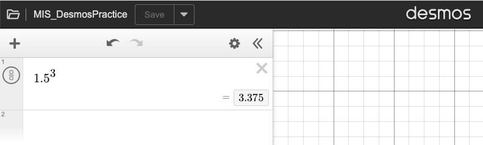
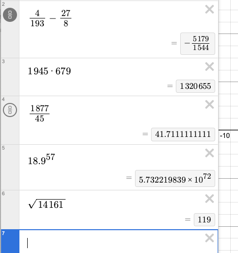
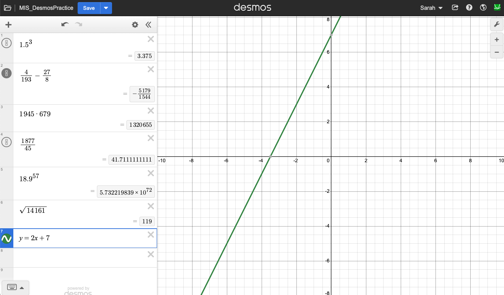
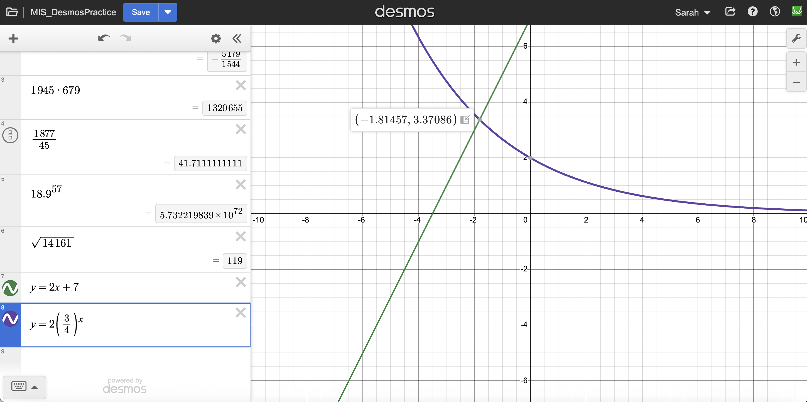
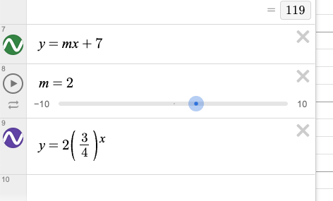
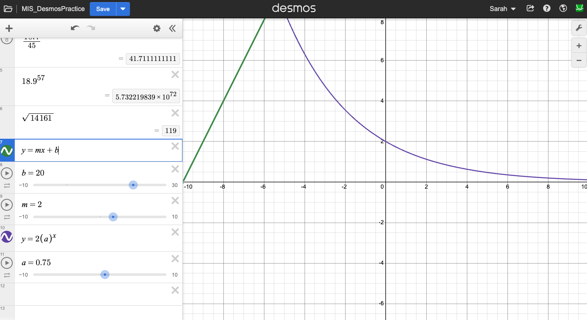
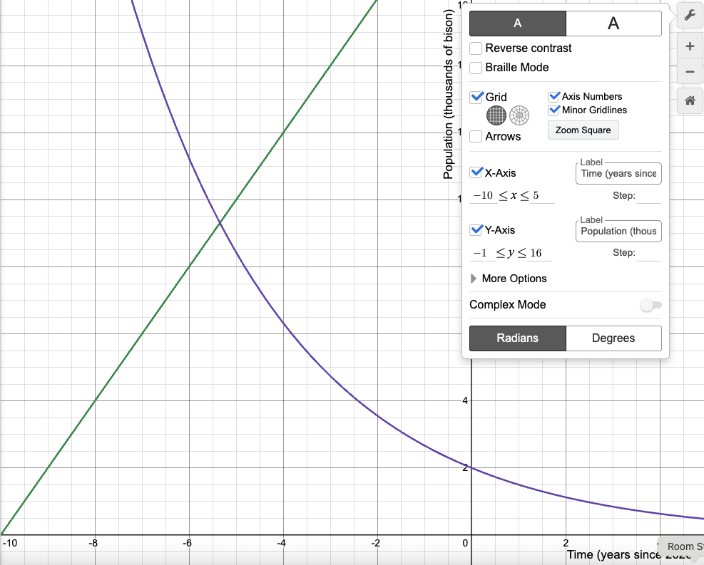

Subsection 1.4.1 Basic Computations
You can use the graphing mode as a calculator for quick computations. If you’re really only doing computations, the scientific or four function calculutor may be more intuitive for you. But, it is convenient to have it all on one screen and once you practice a bit, typing computations out on the keyboard rather than searching for a button can be quicker. See the table below for a list of some mathematical operations that can be used in Desmos.
| Addition |
+ |
shift = (upper right) |
\(3+2\) |
3+2 |
| Subtraction |
- |
- (upper right) |
\(6-1\) |
6-1 |
| Multiplication |
× |
shift 8 |
5 × 4 |
5*4 |
| Division |
/ |
/ (lower right) |
\(10 \div 2\) |
10/2 |
| Exponent |
^ |
shift 6 |
\(4^2\) |
4^2 |
| Square Root |
^.5 or sqrt |
shift 6 or letters |
\(\sqrt{16}\) |
16^.5 or sqrt 16
|
One can use the above operations to evaluate difficult expressions. For example, suppose we wish to know the value of \(1.5^3\text{.}\) You can type this into Desmos as 1.5^3 and the answer will be displayed below in a gray box. Try this for yourself. Your screen should match the one shown below:

Check for Understanding 1.4.2. Desmos Computations.
Use Desmos to compute the following:
\(\displaystyle \frac{4}{193} - \frac{27}{8}\)
\(\displaystyle 1,945 \times 679\)
\(\displaystyle \frac{1,877}{45}\)
\(\displaystyle 18.9^{57}\)
\(\displaystyle \sqrt{14,161}\)
Solution.
You should have something very similar to the picture below.

A few notes:
When you are done typing a fraction, you’ll likely need to use the right arrow to move back to a regular line, rather than continuing to type in the denominator; \(\frac{4}{193} - \frac{27}{8} \neq \frac{4}{193 - \frac{27}{8}}\) The circle on the left with a “fraction of squares” image has been clicked. This presents the answer as a (reduced) fraction.
The commas that appear between every three digits should not be entered into Desmos; you’ll get an error because it thinks you want to enter coordinates for a point on the graph. You can see how it “clumps” three digits together with a bit of space between to help our eyes take in the multidigit numbers.
You can also type frac to get the division line to show up and use the up and down arrows to go between the numerator and denominator.
This is the sort of answer you’ll get for large numbers. This is scientific notation and the \(\times 10^72\) indicates that we can move the decimal point 72 places to the right. Your handheld calculator or phone calculator may use a lower case or backward ‘E’ to indicate the same thing.
An exponent of \(0.5 = \frac{1}{2}\) is the same thing as taking the square root of a number. You can enter this as an exponent or type sqrt and the square root symbol will appear.
Subsection 1.4.2 Graphing
Graphing equations in Desmos is also straight forward. Try typing y=2x+5 into a box on the left. As you type a graph will appear on the right and change. Once you’re done it should look like this:

You may end up with a different color. You can adjust this with the colorful circle with the wavy line to the left of the equation. You can choose from six colors and three solid/dashed/dotted options as well as specific the thickness.
You can have multiple equations plotted on the same grid. Try plotting \(y = 2\left(\frac{3}{4}\right)^x\text{.}\) When an equation is highlighted (or your cursor is in the box), Desmos will show you the intersections of that plot and the axes or any other plot. If you hover over the dots, the coordiates of the point will be displayed.

The above can be done with a graphing calculator, although the display is probably not as nice. But, Desmos is much more handy for investigating graphs. We might wonder what the 2 in our first plot or the \(\frac{3}{4}\) in the second plot do. We could of course change them and see what happens to the graph, or we can do it all together with a slider.
Put your cursor between the 2 and the \(x\) in the first equation. Delete the 2 and type ‘\(m\)’. You’ll get an error icon and an option to “add slider:” with a blue box with an \(m\) in it. Click on the blue box. You’ll get an extra row/box in your list on the left with a slider in it. You can move the bubble back and forth, hit the play button, and adjust the range and step size of the slider. Try it!

Check for Understanding 1.4.3. Try Your Own Slider.
Replace the \(\frac{3}{4}\) in the other equation with a slider. Call it \(a\text{.}\)
Now, add a slider called \(b\) in place of the 7 in your first equation. Change the range so that you can make \(b\) at least 20. What happens?

We can no longer see where the two graphs intersect. (You may need to change your \(a\) slider back to around 0.75 to get a similar picture.) Depending on your computer and the settings, you can move the window around (try clicking and dragging), or zoom in and out either with whatever mouse/trackpad move you use to scroll or using the + and - buttons. For more control, use the wrench icon in the upper right. This will let you specify the window in both the \(x\) and \(y\)-directions as well as adjust grid lines and appearance. This is also where you can label the axes. Maybe this graph represents the size of a population over time. If we’re just investigating, labels and pretty graphs are not as important. But, if we’re including them in a project report, they should be as clear as possible.

The equations we plotted above were all functions, but those are not the only types of equations (or even objects) that can be visualized.
Check for Understanding 1.4.4.
Plot the equation \((x-h)^2 + (y-k)^2 = r^2\) and create sliders for \(h\text{,}\) \(k\text{,}\) and \(r\text{.}\) What does this plot? Use the sliders to determine what each of the values \(h\text{,}\) \(k\text{,}\) and \(r\) change about the plot.
Solution.
The equation \((x-h)^2 + (y-k)^2 = r^2\) plots a circle centered at \((h, k)\) and with a radius \(r\text{.}\)
Your plot will not have the center or radius marked. That is included here for clarity.
Subsection 1.4.3 Image Imports
The last thing we’re going to practice in Desmos is importing our own images. Including an image as a background with the ability to plot equations and make measurements on the same grid, is a way we can study the underlying image. We’ll use this technique to evaluate maps of Congressional districts in
Chapter 6.
To import an image into Desmos, use the drop-down menu shown to the left. Select “image” and browse your files to upload an image. For practice, let’s use an adorable puppy. Download the image linked
here.
Once you upload the picture, you should see the following screen and data. This data includes the width and height of the picture (in Desmos, not the pixel height). Desmos will always center the image, keep the proportions, and scale the image to a width of 10 units. If you’re going to change the size, it is important to scale both the width and the height in the same manner.
The original picture is 480 pixels by 480 pixels. See if you can find this info in the file from your machine. We’ll learn the tools needed to work with the pixel size, Desmos size, and real world representation in
Chapter 3, and we’ll review before we need to apply those skills to the maps.